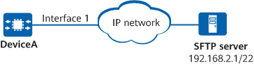

Example for Configuring PM
Networking Requirements
To monitor the operating status of interfaces and collect performance statistics, configure the PM function. This configuration enables a device to periodically collect performance statistics, save the performance statistics to files, and send the files to a PM server.

In this example, interface1 represents 10GE0/0/1.

Configuration Roadmap
The configuration roadmap is as follows:
Enable the data statistics function.
Configure basic data statistics functions.
Configure the device to upload statistics files to the PM server.
Procedure
- Enable the data statistics function.
<HUAWEI> system-view [HUAWEI] sysname DeviceA [DeviceA] pm [DeviceA-pm] statistics enable
- Configure basic data statistics functions.
# Create a statistics task named test to collect traffic statistics on 10GE0/0/1, with the statistics indicator in-all-pkts being excluded.
[DeviceA-pm] statistics-task test [DeviceA-pm-statistics-test] binding instance-type interface instance 10ge 0/0/1 [DeviceA-pm-statistics-test] measure disable instance-type interface measure in-all-pkts
# Set the performance statistics collection interval to 5 minutes and the number of performance statistics collection intervals to 3.
[DeviceA-pm-statistics-test] statistics-cycle 5 Warning: All data of the statistics task will be deleted. Continue? [Y/N]:Y [DeviceA-pm-statistics-test] record-interval 3 Warning: This operation will cause some data to be lost. Continue? [Y/N]:Y [DeviceA-pm-statistics-test] quit
- Configure the device to upload statistics files to the PM server.
# Create a PM server process and configure required parameters.
[DeviceA-pm] pm-server abc [DeviceA-pm-server-abc] protocol sftp ip-address 192.168.2.1 port 22 [DeviceA-pm-server-abc] username user1 password YsHsjx_202206 [DeviceA-pm-server-abc] path /pmserver [DeviceA-pm-server-abc] retry 2 [DeviceA-pm-server-abc] quit
# Enable the device to upload statistics files to the PM server.
[DeviceA-pm] upload-config req1 server abc [DeviceA-pm] upload req1 file a120130525150004.txt
Verifying the Configuration
After configuring PM functions, run the display pm statistics-task [ task-name ] command to check the PM configurations. The following example uses the command output for a performance statistics task named huawei. The command output shows the performance statistics task name, performance statistics collection interval, and performance statistics instance type.
<DeviceA> display pm statistics-task test Task Name : test Task State : running Record-file Status : enable Task Cycle : 5 minutes Sample Interval : 1 minutes Instance Type : interface Record Interval(cycle) : 3 File Format : text File Name Prefix : test File Transfer Mode : passive Current File Name : a120130525150004.txt
In addition, the performance statistics file a120130525150004.txt has been uploaded to the /pmserver path of the PM server.
2020-02-21 14:08:25.371 FileFormatVersion=1.0 SysName=HUAWEI Release_Number=V600R025C00 Start_Time=2020-02-21 13:00,2020-02-21 13:05,2020-02-21 13:10 Statics_Interval=5 Resource_type=6 Total_rows=3 Index List: Index_rows=1 10GE0/0/1 Indicator List: Indicator_rows=41 393217 393218 393219 393220 393221 393222 393223 393224 393225 393226 393227 393228 393229 393230 393232 393233 393234 393235 393236 393237 393238 393239 393240 393241 393242 393243 393244 393245 393246 393247 393248 393249 393250 393251 393256 393257 393258 393252 393253 393254 393255 Value: 0,0,0,0,0,0,0,0,0,0,0,0,0,0,0,0,0,0,0,0,0,0,0,1410065408,2,1,0,0,0,0,0,0,0,0,0,0 ,0,E3,E3,E3,E3 0,0,0,0,0,0,0,0,0,0,0,0,0,0,0,0,0,0,0,0,0,0,0,1410065408,2,1,0,0,0,0,0,0,0,0,0,0 ,0,E3,E3,E3,E3 0,0,0,0,0,0,0,0,0,0,0,0,0,0,0,0,0,0,0,0,0,0,0,1410065408,2,1,0,0,0,0,0,0,0,0,0,0 ,0,E3,E3,E3,E3
Configuration Scripts
# sysname DeviceA # pm statistics enable pm-server abc protocol sftp ip-address 192.168.2.1 username user1 password %^%#Nx^aS;(8+&;-3#WIJy#3PyDSPFO(DOTwdEEmPPB)%^%# retry 2 path /pmserver upload-config req1 server abc statistics-task test statistics-cycle 5 record-interval 3 binding instance-type interface instance 10GE0/0/1 measure disable instance-type interface measure in-all-pkts # return